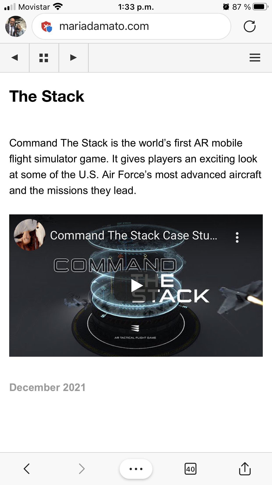
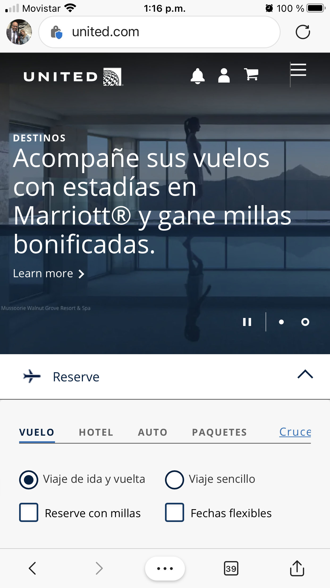

Contrast
Disney
disneyplus.com

The contrast of the violet color of the rectangle forces the observer to notice the offer that the page offers. Additionally, the size, the color or the content, the contrast as a whole attracts the viewer to see the objects in the background, especially those that stand out in white.
Repetition
Mariadamato
mariadamato.com
On this page we look at the image order of repeated use of the same fonts, colors, layouts. At the top we see some scroll bars that allow us to change the image by repeating the same sources. This helps orient the viewer and also subtly shows how certain ideas can be emphasized through recurrences of the same or similar object..
Rule of Thirds
United
united.com
In this design, we see how imaginatively superimposing the nine grids of the rule of thirds that helps the eye to follow the image. It even highlights the reflection of the upper part of the image. In fact, the depth of the image that draws towards the mountains in the background is also highlighted.